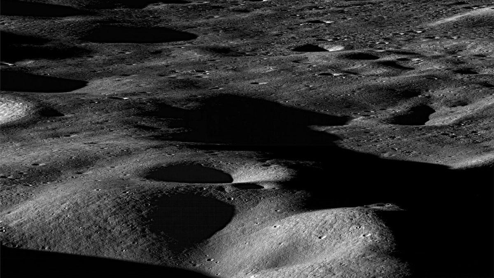
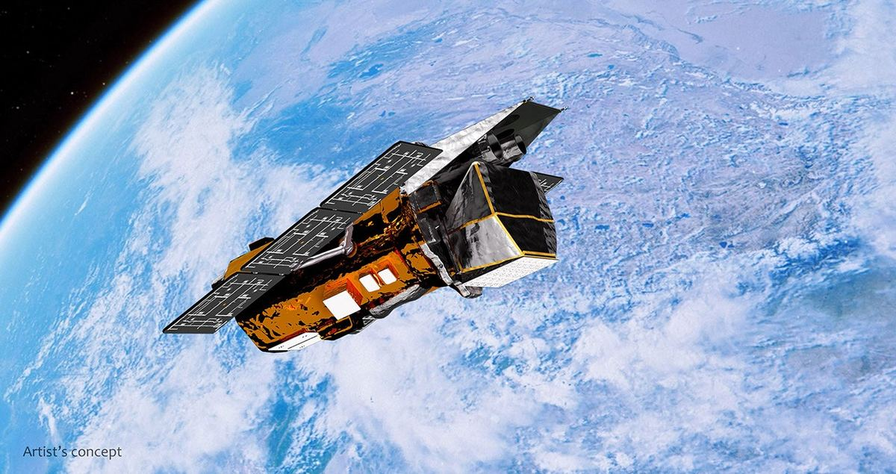

Eos（新聞）· 2026-10-23 · 作者 Matthew R. Francis · 論文：Denton 等人，The Astrophysical Journal Letters 1008, L30（2026-09-01），doi:10.3847/2041-8213/ae91e9（開放取用，CC BY 4.0） 讀原文 →讀論文（免費）→

月球表面的山地與撞擊坑。月球岩石的地球化學成分和地球極為相似，這正是「大碰撞說」最重要的證據之一。圖：NASA/GSFC/Arizona State University（NASA 影像，公有領域；取自 Eos 原文題圖）。
但如果 Theia 更冷、更硬（代表這場撞擊發生得更晚），它會碎成「穀麥片」一樣的小塊，結果又回到傳統的碎屑盤。新模型沒有告訴我們哪個才對；沒參與研究的 Sarah Stewart 說，月球形成「基本上還沒解決」，而且「我們可能不會只有一個答案，這沒關係」。
原文關鍵段
“We don’t actually know when the collision took place,” Denton said. “If Theia is cold, then it’s likely going to be stronger because the hotter you are, the weaker you are. So a cold, strong Theia that’s been around a long time isn’t going to deform as readily as a hot, squishy Theia.”
“But if you implement material strength, you have a crunchy outer layer. That makes a huge difference because if a hot Theia collides with the Earth, it’s just cool enough on the outside and hot enough on the inside that it experiences global deformation.”
進階讀法：Eos 讀完後，打開論文（免費），直接看 Figure 1（同樣的撞擊，上圖無強度、下圖有強度）和 Table 1。表裡表面溫度 2,000 K 的 Theia 留下一顆完整殘骸，1,800 K 留下半完整的殘骸，1,400 K 就只剩碎屑盤。論文的 Methods 很硬，看圖和表就好。
校對紀錄：導讀裡的每個數字出自原文哪裡
導讀說法
原文依據
火星大小的 Theia、撞出的物質形成月球、解釋地月相似與月球偏大
Eos 第 1 段 "a Mars-sized planet known as Theia crashed into the newborn Earth… explain the strong geological resemblance our Moon bears to Earth, as well as the Moon's large size."
幾乎所有模擬把地球與 Theia 當流體
Eos 第 3 段 Denton 引言 "All of these [prior] explanations have relied on the assumption that we can treat the Earth and Theia as fluids when they collide."
西南研究院、Adeene Denton、源自冥衛一研究
Eos 第 3 段。
熱但固態的 Theia → 完整原月球；更冷更硬 → 碎屑盤；撞擊時間點
Eos 第 5 段與 "Lava Lamp or Crunchy Granola" 一節；論文摘要 "a hot but solid Theia produces an intact Moon, whereas a colder, stronger Theia—i.e., a later Moon-formation scenario—produces a classic protolunar disk."
Theia 被剪成兩塊，內側併入地球、外側進入軌道
Eos "The result of the new model is Theia splitting into two pieces, one that merges with Earth… and one that creates a proto-Moon."；論文 3.1 節 "the rebounding portion of Theia is sheared into two intact components… Only the inner, more massive component is consumed by the proto-Earth."
原始地球 88%、Theia 13%；表面接近但未達熔點
Eos "a proto-Earth about 88% of the present Earth's mass and a Theia of about 13%… surface temperatures close to but not quite at the melting point"；論文 2.1 節 0.877 與 0.133 M⊕。
100 萬粒子、第一次加入強度、2,000 K
論文 Figure 1 圖說 "at 1 M particle resolution… hot (∼2000 K) but mostly solid"；摘要 "for the first time using smoothed-particle hydrodynamics (SPH) simulations with realistic strength"。
The storm comes in the midst of an El Niño, a climate pattern marked by warmer-than-normal water temperatures in parts of the equatorial Pacific that emerges roughly every two to seven years. The changed ocean conditions can influence the atmosphere in ways that alter global weather patterns and change the distribution of rainfall, winds, tropical cyclones, fires, floods, and other phenomena.
In the Bay of Bengal, for instance, some research indicates that altered environmental conditions during an El Niño are associated with a reduction in tropical cyclone activity. The ocean basin sees both less frequent and less intense tropical cyclones during El Niño years, researchers have found.
第 1 段 "The first named storm of the 2026 North Indian Ocean cyclone season—Arnab… emerged in the Bay of Bengal on October 25, a rather late start for a basin that typically produces named cyclones in April or May."
論文進一步發現，這些細胞靠著大量表現一條固碳路徑（還原性乙醯輔酶 A 路徑），在極低的二氧化碳濃度下也能把碳「撿」起來，而所有能量都來自無生命的礦物—水反應產生的氫氣。不過研究者也說，它們「不開心，但還是長了」：生長變慢，有壓力反應。
原文關鍵段
But Enceladus’s high alkalinity, a pH anywhere from 8 to 11.6, would be hard for any organism to survive, let alone maintain a stable or growing population. At those pH levels, DIC is mostly locked up in forms that organisms can’t access. Could the lack of CO2 starve methanogens out?
The experiments showed that the archaea survived, reproduced, and created methane in the Enceladus simulant better than in control mixtures at the same pH. In the Enceladus simulant, M. okinawensis produced methane at pH levels up to 11, while the control groups died out at lower pH. That suggests serpentinization created enough H2 to feed the archaea despite the low availability of CO2.
Eos 第 1 段 "The Cassini mission flew through and sampled the geyser spray in 2015, revealing… dissolved inorganic carbon (DIC), molecular hydrogen (H2), and methane (CH4)."
pH 8–11.6、小蘇打或含氨清潔劑、低 CO₂
Eos 第 2 段與 "Life at the Extremes" 一節 "a pH anywhere from 8 to 11.6"。
慕尼黑大學 LMU、Helmbrecht、Orsi；沖繩海槽、pH 8.5、「只能挑一種就挑它」
Eos "Life at the Extremes" 一節各段。
48 小時、pH 高到 11、對照組在更低 pH 死亡、蛇紋岩化供氫
Eos 同節末兩段（即關鍵段）。
還原性乙醯輔酶 A 路徑、能量全來自無生命氫氣、超過已知 pH 上限
論文摘要（Europe PMC 收錄）"overexpressing the reductive acetyl-CoA pathway for CO2 fixation… entirely fueled by the abiotic H2"。只讀了摘要，未讀全文。
Science Advances、2026-09-25
Eos "The team published these results in Science Advances in September"；日期取自 Europe PMC 書目。
壓力反應、「不開心但還是長了」、下一步看適應與生態系
Eos "Exploring the Common Ground" 一節 Orsi 與 Helmbrecht 引言。
適居性改為 pH＋DIC＋H₂ 組合
Eos 同節 "Berne" 引言。原文未交代此人身分。
土衛二直徑約 500 公里、海水 pH 約 8.1、冰殼 5 km／海洋 65 km
不在 Eos 原文裡：直徑與海水 pH 是導讀補充的常識數字，冰殼與海洋厚度取自 NASA 示意圖 PIA21442 上的標示。
台灣：六十幾座熱泉噴口、SPOT、黑煙囪、生命起源
台大論文摘要（2014）與公視新聞（2019-07-22）。
天文 · 太空任務基礎原文約 900 字 · 6 分鐘
Swift 望遠鏡的最後一週：救援船自己轉暈了，22 年的老將要墜回大氣層
NASA’s Swift Mission Ends, Leaves Behind Scientific Bonanza
NASA（新聞）· 2026-10-26 · 編輯 Francis Reddy · 另參考 NASA Swift 部落格 2026-10-23（Jeanette Kazmierczak）、Nature 新聞 2026-10-27、SpacePolicyOnline 2026-08-19（Marcia Smith） 讀原文 →NASA 部落格 →Nature 新聞 →救援失敗始末 →

Neil Gehrels Swift 天文台在地球軌道上的想像圖。圖：NASA's Goddard Space Flight Center Conceptual Image Lab（NASA 影像，公有領域）。
三句話
Swift 是 2004 年 11 月 20 日升空的 NASA 太空望遠鏡，原本只設計做兩年任務，結果飛了將近 22 年：看過超過 2,000 個伽瑪射線暴、1,400 多個超新星，貢獻了約 7,000 篇論文。它的絕活是「快」：偵測到伽瑪射線暴後，大約一分鐘內就能自己轉過去對準，趕在餘暉消失前拍到。
近兩年太陽活動旺盛，地球高層大氣被加熱膨脹，軌道上的阻力變大，Swift 越掉越低。NASA 去年底用 3,000 萬美元、11 個月的時間請新創公司 Katalyst 做一艘救援船 LINK 去把它抓住推回 600 公里高的軌道，7 月 3 日發射；但 LINK 上去不久就陷入每秒 9 度的多軸自轉，花一個月才降到每秒 1.47 度，8 月 19 日 NASA 宣布放棄救援。
Swift 重新開機做了幾百次觀測，但每次轉動望遠鏡都增加阻力。10 月 20 日它掉到 275 公里高、進入安全模式，當天做完最後一次觀測；10 月 23 日地面送出結束任務的指令。它預計在「未來幾週內」重返大氣層，大部分會燒掉，可能剩少量碎片落入海洋。
原文關鍵段
“Swift was designed as a satellite dedicated to studying gamma-ray bursts, outbursts that came and went so quickly that no one could target them with large telescopes to learn more,” said S. Bradley Cenko, the mission’s principal investigator at NASA’s Goddard Space Flight Center in Greenbelt, Maryland. “Swift needed to detect and locate gamma-ray bursts, communicate their position to other observatories, and then swing its telescopes around to image the burst locations before their afterglows faded out. This typically took Swift about a minute to do.”
On Oct. 20, Swift reached 171 miles (275 kilometers). At this point, the spacecraft was no longer able to compensate for the effects of the increased drag and entered safe mode.
「Swift 被設計成一顆專門研究伽瑪射線暴的衛星，這種爆發來得快去得也快，沒有人來得及用大望遠鏡對準它們多看一眼，」任務首席科學家、NASA 戈達德太空飛行中心的 S. Bradley Cenko 說。「Swift 必須偵測並定位伽瑪射線暴，把位置通知其他天文台，然後把自己的望遠鏡轉過去，趕在餘暉消失前拍下爆發的位置。這整套動作 Swift 通常一分鐘左右就做完。」
2004-11-20 升空、設計兩年、超過 10 倍壽命、2018 年改名紀念 Neil Gehrels
NASA 新聞稿 "launched into orbit on Nov. 20, 2004"、Domagal-Goldman 引言 "designed for a two-year primary mission but productive for more than 10 times as long"、"In 2018, NASA renamed the mission to honor Gehrels following his death."
超過 2,000 個 GRB、1,400 多個超新星、約 7,000 篇論文
NASA 新聞稿 "observed more than 2,000 gamma-ray bursts… more than 1,400 supernova explosions… about 7,000 published scientific papers"。Nature 寫 "almost 2,000"，矛盾，見找碴點。
約一分鐘轉向；一天 75 個目標；幾分鐘內接受臨時指令
NASA 新聞稿 Cenko 引言（即關鍵段）與 "could schedule up to 75 independent targets a day"。
短暴來自中子星合併；2017 合併造出金與鉑
NASA 新聞稿 GRB 050509B 一段；Nature 新聞 "In 2017, Swift also observed the aftermath of one especially momentous neutron-star collision to help to show that these events synthesize heavy elements such as gold and platinum."
太陽活動 → 阻力 → 下沉；觀測增加阻力
NASA 部落格 2026-10-23 "Recent solar activity increased this effect on Swift… The return to observations increased drag on the spacecraft."
10/20 到 275 公里、安全模式、最後一次觀測；10/23 送出結束指令
NASA 部落格與新聞稿 "On Oct. 20, Swift reached 171 miles (275 kilometers)… entered safe mode"、"Swift conducted its final observation on Oct. 20"；部落格發布日期 2026-10-23。
Nature 新聞 "the rescue mission began to spin uncontrollably before reaching its target"；SpacePolicyOnline "multi-axis spin"。
重返後大部分燒毀、少量碎片入海；11 月 2 日
Nature 新聞 "Some researchers predict Swift will re-enter Earth's atmosphere on 2 November. The majority of the observatory will burn up, likely leaving a small amount of debris to crash into the ocean."Nature 全文需登入，導讀只讀到免費的前半段。